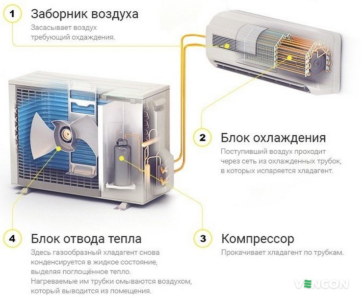
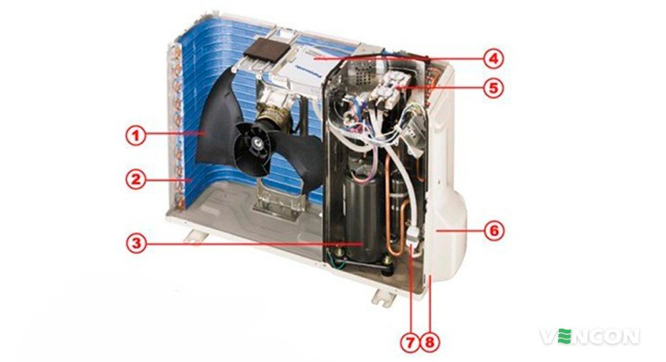
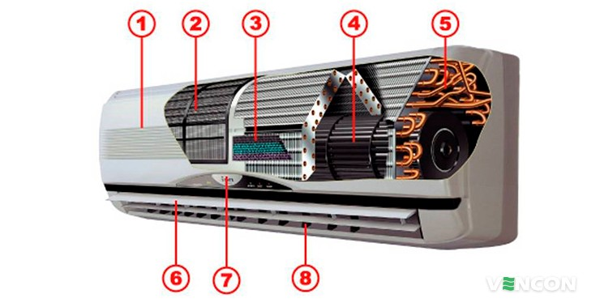
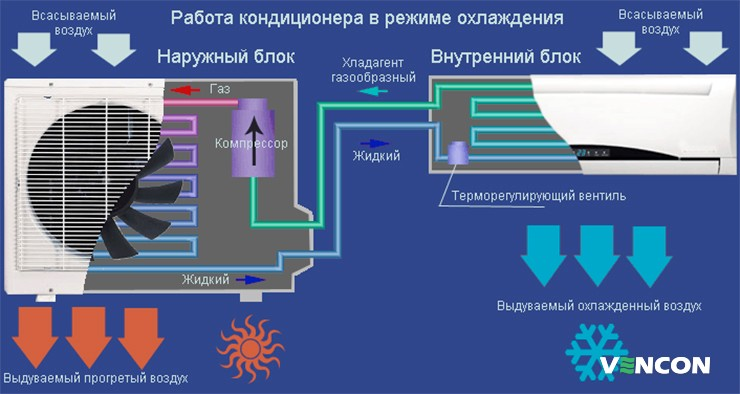
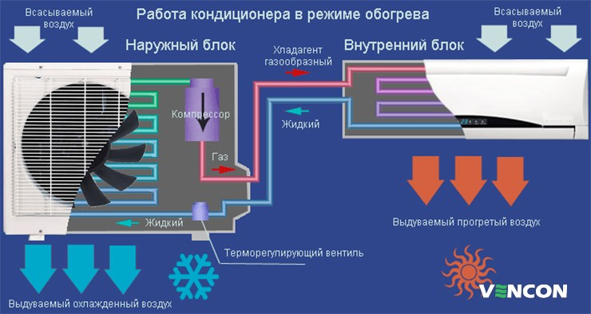
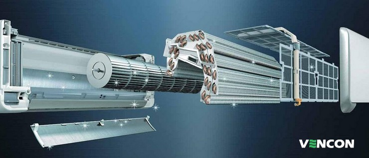

Далеко не каждый знает, что изобретение кондиционера специально не было запланировано. Данное изделие
«появилось на свет» путем эксперимента. В 1902 году Уиллис Еэрриер работал над созданием
осушающей машины,
чтобы спасти полиграфическое предприятие. А в итоге стал основоположником тому, что в данный момент
человечество использует кондиционеры для своего комфорта и здорового микроклимата помещения. Безусловно,
установка кондиционера значительно увеличивает комфорт. Но, мало кто задумывается, по какому
принципу
работает данный прибор. Большинство полагает, что разбираться в подобной теме стоит только специалистам. На
самом деле, знать принцип работы и из каких составляющих состоит приспособление стоит. Подобная информация
позволит эксплуатировать прибор осознанно и разумно. Зная все особенности, можно избежать многих поломок и
неточностей в работе системе. Поэтому, в вопросе функционирования кондиционера необходимо быть
осведомленным.
Принцип работы
Работа кондиционера осуществляется посредством двух составляющих: наружный и внутренний блок. Наружный блок
обдувается уличными воздушными массами, а внутренний - комнатным воздухом. Так мы получаем ответ на самый
распространенный вопрос всех, кто желает разобраться в принципе работы системы – откуда в кондиционере
образовывается воздух? Стоит указать, что в данной статье рассматривается современные модели кондиционеров
(сплит-системы). Их конструкция состоит из внутреннего и наружного блоков. Чтобы понять процесс работы самого
кондиционера стоит детально рассмотреть особенности каждого блока.

Наружный блок
Данная часть устройства включает следующие элементы:

- Вентилятор- потоком воздуха обдувает конденсатор для поддержания его "правильной" работы.
- Конденсатор - элемент, посредством которого выполняется переход из газообразного состояния в жидкое. То есть,
конденсатор выполняет охлаждение и конденсацию хладагента
- Компрессор – служит «сердцем» кондиционера. Его задача – выполнять сжатие фреона и вести контроль его
движения.
- Плата управления – входит в конструкцию инверторных моделей кондиционеров. В не инверторных моделях
электроника расположена во внутреннем блоке.
- Четырехходовой клапан – присутствует в кондиционерах реверсивного вида, работающих в режиме подогрева и
функцией «лето-зима».
- Штуцерные соединения – вспомогательные приспособления для подключения медных труб.
- Фильтр – расположен перед входом компрессора. Является преградой к попаданию мелких частиц, пыли, пуха.
- Защитная крышка – закрывает штуцерные соединения и разъемы в целях безопасности и эстетичного внешнего вида
прибора.
Внутренний блок
Внутренний блок, как и наружный, имеет ряд таких элементов:

- Панель с решеткой – служит первоначальным элементом, через который поступает воздух. Легко снимается на момент
обслуживания (чистка фильтров).
- Фильтр грубой очистки – представляет собой прочную пластиковую сетку с мелкими отверстиями. Задерживают пыль,
пух и другие мелкие частицы. Требуют систематической очистки не менее 2-х раз за год.
- Система фильтров – комплект фильтров тонкой очистки (угольный, электростатический, антибактериальный и прочие
типы). Вид системы фильтров зависит от модели кондиционера.
- Вентилятор – циркуляция воздуха, обдув испарителя.
- Испаритель – нагревает холодный фреон, за счет чего происходит испарение.
- Горизонтальные жалюзи – предназначены для регулировки воздушного потока (за заданным положением пользователя)
по вертикали. Управление выполняется через дистанционный пульт.
- Индикаторная панель – отображает действующий режим работы кондиционера, сигнализирует в момент обнаружения
сбоев в работе.
- Вертикальные жалюзи – блок электроники с микропроцессором.
- Плата управления – регулировка воздушного потока по горизонтали.
- Штуцерные соединения – расположены в нижней задней части блока. К ним присоединяются медные трубы, соединяющие
наружный и внутренний блоки.
Принцип действия кондиционирования
Сам принцип действия системы кондиционирования можно описать по следующей схеме. Принцип идентичный независимо от
имени и особенностей торговой марки, а также от модельной серии системы. Компрессор, конденсатор и испаритель
объединены в замкнутую конструкцию прочными трубками из меди. Внутри контура циркулирует хладагент с
незначительным количеством компрессорного масла. Фреон в газообразном виде из испарителя перемещается в
компрессор, где происходит сжатие хладагента. Температура фреона повышается до 90 градусов и поступает в
конденсатор. На этом этапе хладагент снижает свою температуру и из газообразного вида превращается в жидкое
состояние. На выходе его температурные показатели на 10-20 градусов выше, в сравнении с уличной обстановкой. При
этом образуется тепло. Совершая путь через терморегулирующий вентиль, фреон снижает температуру (остывает) и его
часть испаряется. Полученная смесь жидкого и газообразного фреона перемещается в испаритель, где приобретает
газообразное состояние. На этом же процессе работы забирается тепло из помещения. Следовательно, в помещении
становиться прохладней (температура снижается до заданной отметки пользователем). Затем цикл повторяется. В
случае, если кондиционер установлен в режим «обогрев», процесс работы системы зеркальный.
Работа кондиционера на холод

Работа кондиционера на тепло

Отличия в процессе работы инверторного кондиционера
Иверторный
кондиционер имеет некоторые отличия в работе. Это современный экземпляр системы
кондиционирования,
основная задача которого – экономия энергии и продление эксплуатационной службы компрессора. Процесс работы
подразумевает плавную регулировку мощности. Если проводить сравнение, то не инверторный работает по
принципу «включение-выключение», а инверторные модели не выключаются, а снижают мощность. Именно это позволяет
двигателю компрессора работать в щадящем режиме, значительно увеличивая продуктивные показатели. Еще одно
преимущество – стабильный температурный режим в помещении при значительно меньших расходах электроэнергии.
Причина неисправностей кондиционера
В период эксплуатации у некоторых пользователей, по их словам, кондиционер начинает плохо работать, то есть
принцип работы системы имеет сбой или какие-то нарушения. Распространенная причина – утечка хладагента. Но,
стоит указать, что такая неполадка возникает только у старых или некачественных экземплярах. О том, что
произошла утечка хладагента, свидетельствует обмерзание вентиля или испарителя.

Среди возможных неполадок – выход из строя компрессора. Это происходит, когда в контур попадает большое количество
воздуха или влаги. Чтобы подобная ситуация не возникла, нужно при монтажных работах выполнить вакуумирование.
Процедура проводиться с помощью специального насоса. В случае, если новая модель кондиционера перестала работать,
не спешите бить тревогу. Проверьте для начала исправную работу батареек из дистанционного пульта (в большинстве
случае причина кроется именно в них). Если же батарейки исправны, а прибор не работает (имеет какие-либо перебои в
работе) обязательно вызовете мастера. Эксплуатация неисправного оборудования категорически не рекомендуется.
Вовремя устраненная неполадка не скажется на работе кондиционера на дальнейшую эксплуатацию.
Среди возможных неполадок – выход из строя компрессора. Это происходит, когда в контур попадает большое количество
воздуха или влаги. Чтобы подобная ситуация не возникла, нужно при монтажных работах выполнить вакуумирование.
Процедура проводиться с помощью специального насоса. В случае, если новая модель кондиционера перестала работать,
не спешите бить тревогу. Проверьте для начала исправную работу батареек из дистанционного пульта (в большинстве
случае причина кроется именно в них). Если же батарейки исправны, а прибор не работает (имеет какие-либо перебои в
работе) обязательно вызовете мастера. Эксплуатация неисправного оборудования категорически не рекомендуется.
Вовремя устраненная неполадка не скажется на работе кондиционера на дальнейшую эксплуатацию.